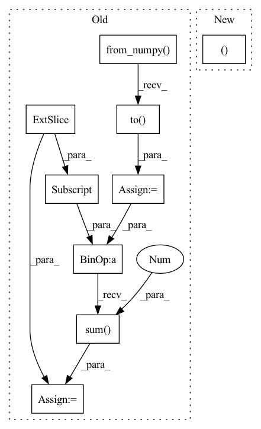

Pattern ID :2341

Before Change
// Self-attention
causality_mask = np.tril(np.ones((1, 1, seq_len, seq_len), dtype=np.int))
attn_mask = torch.from_numpy(causality_mask).to(self.device)
// attn_mask = valid_his.view(batch_size, 1, 1, seq_len)
for block in self.transformer_block:
seq = block(seq, attn_mask)
seq = seq * valid_mask[:, :, None].float()
his_vector = (seq * (position == 1).float()[:, :, None]).sum(1)
return his_vector
After Change
])
def forward(self, seq, lengths):
batch_size, seq_len = seq.size(0), seq.size(1)
len_range = torch.from_numpy(np.arange(seq_len)).to(self.device)
valid_mask = len_range[None, :] < lengths[:, None]
// Position embedding
In pattern: SUPERPATTERN
Frequency: 3
Non-data size: 9
Instances
Fragment ID: 14429006
Project Name: thuwangcy/rechorus
Commit Name: 03e00482d35ef5c38ecdfba21aa5cd1802873944
Time: 2020-12-12
Author: THUwangcy@gmail.com
File Name: src/models/sequential/ContrastRec.py
M Class Name: SASRecEncoder
N Class Name: BERT4RecEncoder
M Method Name: forward(3)
N Method Name: forward(3)
M Parent Class: nn.Module
N Parent Class: nn.Module
M File Name: src/models/sequential/ContrastRec.py
N File Name: src/models/sequential/ContrastRec.py
M Start Line: 267
M End Line: 284
N Start Line: 270
N End Line: 285
'>
Before Change
// Self-attention
causality_mask = np.tril(np.ones((1, 1, seq_len, seq_len), dtype=np.int))
attn_mask = torch.from_numpy(causality_mask).to(self.device)
// attn_mask = valid_his.view(batch_size, 1, 1, seq_len)
for block in self.transformer_block:
seq = block(seq, attn_mask)
seq = seq * valid_mask[:, :, None].float()
his_vector = (seq * (position == 1).float()[:, :, None]).sum(1)
return his_vector
After Change
seq = block(seq, attn_mask)
seq = seq * valid_mask[:, :, None].float()
his_vector = seq[torch.arange(batch_size), lengths - 1]
return his_vector
'>
Fragment ID: 14429007
Project Name: thuwangcy/rechorus
Commit Name: 7b8b88b828f814cb8da18e1305837d1bce99306c
Time: 2021-04-14
Author: THUwangcy@gmail.com
File Name: src/models/developing/ContraRecBeta.py
M Class Name: SASRecEncoder
N Class Name: BERT4RecEncoder
M Method Name: forward(3)
N Method Name: forward(3)
M Parent Class: nn.Module
N Parent Class: nn.Module
M File Name: src/models/developing/ContraRecBeta.py
N File Name: src/models/developing/ContraRecBeta.py
M Start Line: 280
M End Line: 297
N Start Line: 135
N End Line: 150
'>
Before Change
// Self-attention
// TODO: 其他模型结构
len_range = torch.from_numpy(np.arange(self.max_his)).to(history.device)
position = (lengths[:, None] - len_range[None, :seq_len]) * valid_his
pos_vectors = self.p_embeddings(position)
his_vectors = his_vectors + pos_vectors
attn_mask = valid_his.view(batch_size, 1, 1, seq_len)
his_vectors = self.transformer(his_vectors, attn_mask)
his_vectors = his_vectors * valid_his[:, :, None].float()
his_vector = his_vectors.sum(1) / lengths[:, None].float()
// his_vector = his_vectors[torch.arange(batch_size), lengths - 1, :]
intent_pred = self.proj(his_vector) // bsz, K
After Change
his_vectors = self.i_embeddings(history)
his_vector = self.encoder(his_vectors, lengths, valid_his, t_history, user_min_t)
intent_pred = self.proj(his_vector) // bsz, K
return his_vector, intent_pred
class GRUEncoder(nn.Module):
def __init__(self, emb_size):
'>
Fragment ID: 14429002
Project Name: thuwangcy/rechorus
Commit Name: 7c6b4cfaf0b7765452a8e750212a05ddf29aaae7
Time: 2021-08-16
Author: THUwangcy@gmail.com
File Name: src/models/developing/TiMiRec.py
M Class Name: IntentPredictor
N Class Name: IntentPredictor
M Method Name: forward(5)
N Method Name: forward(3)
M Parent Class: nn.Module
N Parent Class: nn.Module
M File Name: src/models/developing/TiMiRec.py
N File Name: src/models/developing/TiMiRec.py
M Start Line: 207
M End Line: 224
N Start Line: 217
N End Line: 222